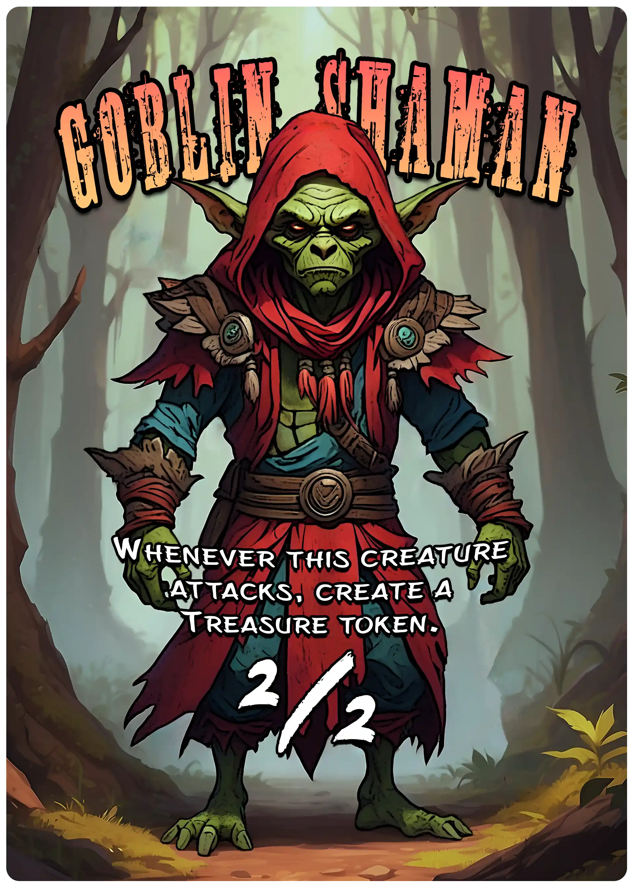

Grafisk design
Det visuelle udtryk spiller en stor rolle for indlevelsen i et spil-univers. Man kan sige, at spilmekanikkerne udgør skelettet og muskulaturen i spillet, og alt det visuelle udgør huden. Sagt på en anden måde, er der altså tæt forbindelse mellem spilmekanik og det visuelle udtryk.
Thumbnails
Her ser du nogle eksempler på "thumbnails" (miniaturebilleder til video'er) jeg har lavet.
Kortdesign
Her ser du et par eksempler på nogle “custom tokens” jeg har lavet til spillet Magic: the Gathering.

Spilobjekter
Her ser du nogle eksempler på andre spilobjekter jeg har lavet.